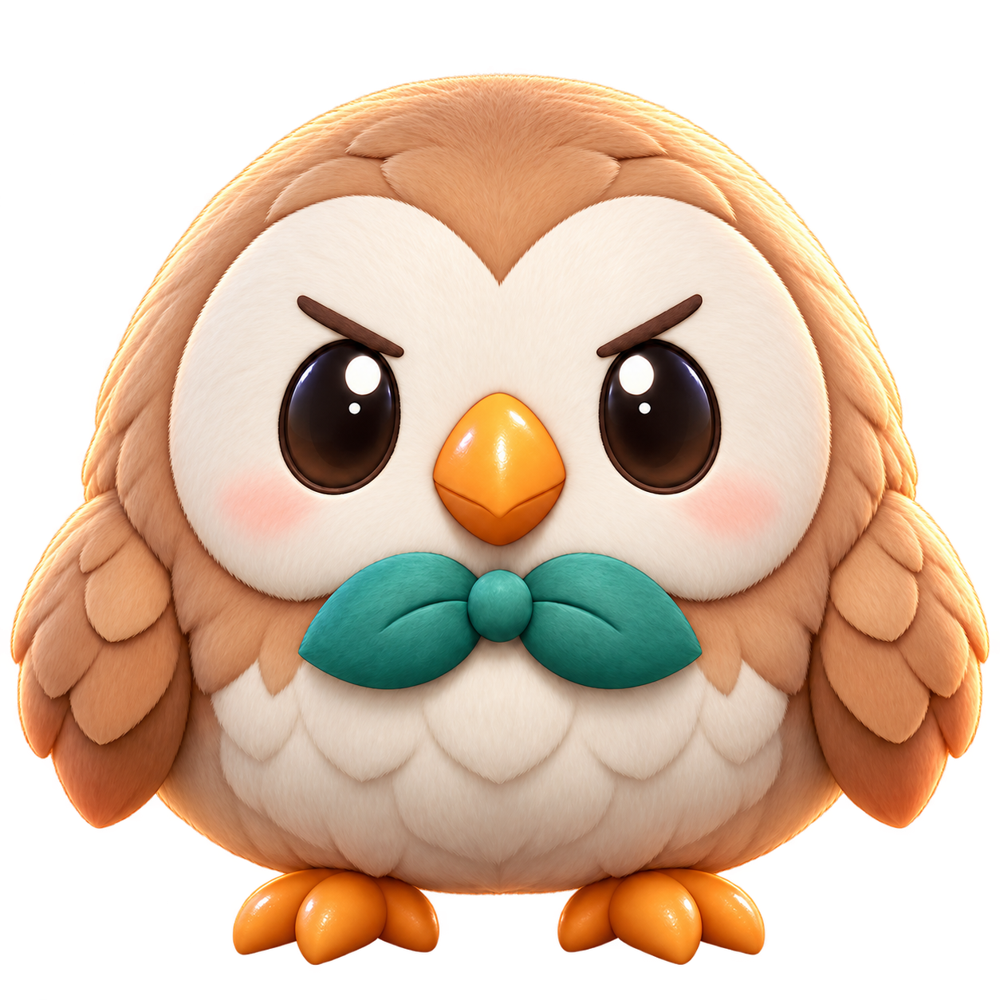

Launch an owl to take down enemies in this slingshot action game. 30 stages.
Match 4 or more gummies of the same stage to evolve them in this falling-block puzzle.
Score more goals than your opponent before time runs out in this quick soccer match.
4v4 slingshot showdown — team up and knock out the rival owls first.
Talk with Moku without setting him off. Pick your reply carefully — one wrong word and he blows up.
If you're using Safari, follow these steps to launch it like an app.
If you're using Chrome or another browser, please reopen this page in Safari first.
On this device, you can add it directly with the button below.
If the button doesn't respond, choose "Add to Home Screen" from the browser menu (⋮) instead.
This feature is available in iPhone, iPad, and Android browsers. Please open this page on one of those devices and follow the instructions.